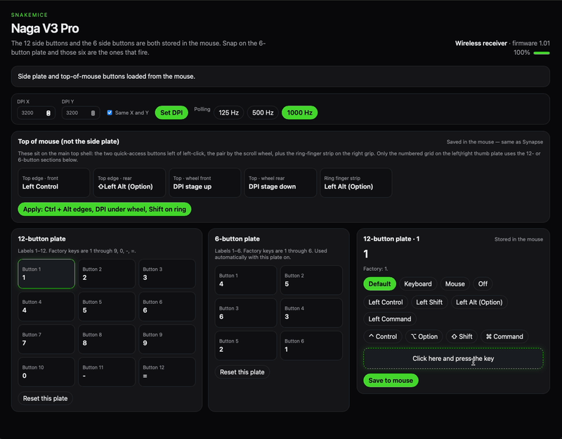

SnakeMice
Unofficial, open-source Mac app: remap thumb and top buttons, DPI, and polling rate for the Razer Naga V3 Pro when Razer Synapse on macOS does not detect or configure this model. Settings are written to onboard memory on the mouse (they persist after you close the app). Connect with the USB cable or 2.4 GHz dongle; quit Synapse while configuring. Bluetooth is not supported for programming.
cargo build --release. See the README on GitHub for details.

Many users report that Synapse on macOS does not list or fully support this mouse for customization. SnakeMice sends configuration commands over USB or the wireless receiver so you can map buttons and DPI on the Mac directly.
Not for basic needs—SnakeMice writes settings into the mouse like an onboard profile. The usual workaround of “configure in Windows Synapse then bring the mouse back to Mac” is still valid, but SnakeMice is meant to avoid that step for Naga V3 Pro owners on macOS.
Use the USB cable or 2.4 GHz dongle. Bluetooth is not supported for configuration in this app.
Check GitHub Releases. If there is no binary yet, build from source with Rust—see the README on GitHub.